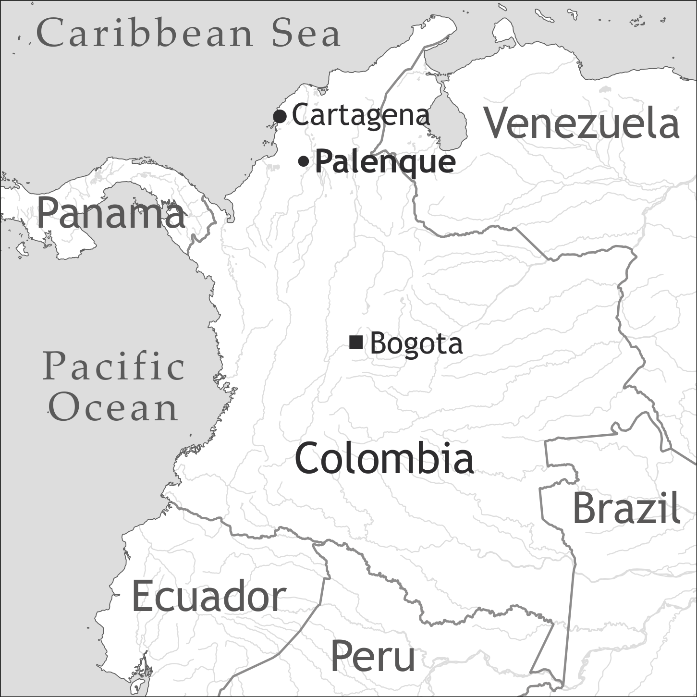
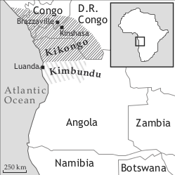

by Armin Schwegler


The Spanish-based creole Palenquero (locally known as Lengua) is spoken in the village of El Palenque (also known as San Basilio de Palenque, or El Palenque de San Basilio). Located about 60 kilometres from Cartagena de Indias (Colombia), Palenque has been a bilingual (Spanish/Palenquero) community for about three hundred years. Its exact date of establishment is not known (but see Schwegler 2013+), and neither is the precise African provenance of its original maroon dwellers. The scholarly literature shows that the village must have been founded some time between 1650 and 1700, and that the core of its population consisted of Kikongo speakers (Schwegler 1998, 2006a, 2006b, 2011a). Scholars continue to debate whether the creole formed in situ, or is a last remnant of a once more widespread contact vernacular (Lipski 2005: 303–304). The question remains largely unresolved.
Until very recently, Palenque had always been a place where only few outsiders ventured. Throughout much of the 20th century, its creole was heavily stigmatized and viewed as “backwards”, even by Palenqueros (de Friedemann & Patiño 1983; Schwegler & Morton 2003). Between 1970 and 2000 this led younger generations to abandon Palenquero in favour of Spanish. Today, only about half of Palenque’s 4,000–5,000 inhabitants have active command of the creole (the adult remainder has partial or complete passive knowledge). It is important to note, however, that starting around the year 2000, an astonishing reversal of fortunes has taken place, giving Palenquero renewed vigour (Schwegler 2011b). Many adolescents now take great pleasure in learning the creole, and gone are the days when Palenquero (and with it local culture) was shunned. The question of whether it is currently an endangered language (as it seemed to be just a few years ago) can thus no longer be answered with confidence.
Palenquero is the only Spanish-based creole on the South American mainland. Its daily lexicon is almost entirely Spanish-based, and yet fluently spoken Palenquero is essentially unintelligible to native speakers of Spanish (Schwegler 2000, 2002b). Typologically as well as geographically, Papiamentu is Palenquero’s closest relative, but mutual intelligibility between the two languages would be tenuous at best (Palenque and the islands where Papiamentu is spoken [i.e. Aruba, Bonaire, and Curaçao] have never had any significant social contact).
Palenquero grammar differs substantially from that of Spanish. This difference largely explains why native Spanish speakers do generally not understand spoken Palenquero. The creole exhibits several features (e.g. a mostly preverbal TMA system; invariable verb stems; genderless nouns, adjectives, and pronouns) that are typically associated with creole languages. At the same time Palenquero lacks some serial verbs and other features that characterize Atlantic creoles (Holm & Patrick 2007, feature 14). The absence of serialization and similar prototypical grammatical traits may be a direct reflection of Palenquero’s relatively uniform substrate. If Palenquero indeed has a strong Kikongo connection (see above), then the absence of serial verbs should not surprise. As is well known, serialization is common in many West African languages, but rare in the Bantu family (to which Kikongo belongs).
Starting around the 1950s, many Palenqueros (50% or more) began to take up residency in the nearby cities of Cartagena and Barranquilla, and beyond. Despite clustering in socially cohesive barrios, in their new environment these emigrados have tended to shun the creole. Improved public transportation and recent sociocultural changes (Schwegler 2011+a) have significantly facilitated access to Palenque, thus strengthening its linguistic and sociocultural ties with the diaspora.
Palenque has gained national as well as international fame, and has become an academic tourist mecca of sorts. In 2005, UNESCO proclaimed Palenque as a “Masterpiece of the Oral and Intangible Heritage of Humanity”. The village is now rather well connected to the outside world, with access to the Internet as well as other amenities typically associated with modern life (until the mid 1980s, running water, electricity, TV etc. were practically non-existent in Palenque).
From 1600 to 1650, Cartagena de Indias (founded in 1533) was Latin America’s major slave trade centre (del Castillo Mathieu 1982). As such, Cartagena was the “blackest” and most ethnically diverse city in the New World, a fact that the well-informed contemporary observer Alonso de Sandoval made clear in his enlightening De instauranda aethiopum salute. Un tratado sobre la esclavitud (Sandoval 1627 [1987]). During Cartagena’s heyday, bozales (newly imported slaves) from virtually every corner of West and Central West Africa arrived in the city, thereby contributing to an unusually rich situation of New World multilingualism (over seventy African languages were spoken locally). Maroonage was common, and during the 17th century small groups of escaped slaves managed to establish their first palenques (fortifications) in Cartagena’s hinterland (Navarrete 2003, 2008a, 2008b, n.d.).
The extent to which Palenque is a residual community of earlier nearby palenques is not entirely clear. We can, however, be confident that Benko Bioho, a legendary maroon leader who is often mentioned by Palenqueros as the founder of their community, is almost certainly the literary product of fertile poetic imagination rather than historical facts (on this point, see Schwegler 2011a, 2013+).
In light of Cartagena’s 17th-century multilingual Black population, it is easy to understand why researchers originally held working assumptions that conceived of Palenque’s early inhabitants as a mix of profoundly diverse ethnicities, each endowed with its own separate language. The search for substrate influences in Palenquero thus seemed unusually daunting, and the expectation persisted that research would eventually lead to the discovery of several dominant substrates (rather than a single one). As it turns out, to date these expectations have not been met. Instead, investigations carried out over the past quarter century (1985–2012) suggest that Kikongo may have been Palenque’s only significant African substrate (Schwegler 2006a, 2013+).
Contrary to what occurred elsewhere in the Americas, in the Cartagena hinterland, Black maroons rarely joined forces with American Indians (Borrego Plá 1973: 27). Moreover, American Indian languages vanished early in the Cartagena area, mainly because indigenous communities were decimated soon after the Spanish established the city. These factors explain why Amerindian languages have not impacted the evolution of the Palenquero language, and why Palenqueros seem to exhibit few non-Subsaharan traits (to this day, Palenque is essentially a “Black town” whose racial homogeneity stands in contrast to that of surrounding villages, where whites, Blacks, and (some) Amerindians have historically mixed with considerable frequency).
As already mentioned, Palenquero is currently spoken by about half of the community. The majority of these speakers belong to the older generations (40 years or more). Starting around 1960, many native speakers ceased to transmit the creole to their children, and at times forbade them to use it. Until the end of the 20th century, many in the community felt that the maintenance of Palenquero was a primary cause for the socioeconomic atraso (‘backwardness’) that tended to afflict rural Palenque.
Palenquero bilingualism has always featured very rapid and almost constant code switching. This has, at times, led outsiders to believe that Palenquero is more intelligible to Spanish speakers than it is in actuality. Strictly monolingual discourse in the creole can occur for extended stretches of time, but it is the exception rather than the norm (see the Palenquero dialogue in §6, where switches occur in the first and the fifth last turn).
Contrary to what has been observed in other creole communities, old and young bilinguals employ virtually identical grammars, that is, they do not use different lects (Schwegler 2001). Palenquero has thus been surprisingly uniform and stable over time, a fact that may be explained in part by Palenque’s historically small and geographically concentrated population.
Prior to the arrival of linguists (Carlos Patiño, Schwegler, Yves Moñino, Thomas Morton, etc.) in the community between the 1970s and 1990s, Palenquero was strictly an oral language. As such, its status remained low, and it could not be used in school. At that time, a small group of Palenquero youngsters voiced interest in learning more about the history and true nature of their language. With the help of the aforementioned scholars, a modest, largely informal programme of etnoeducación (‘language and culture’) was created. By the 1990s, some of the local participants became teachers in Palenque’s secondary school (ca. 800 students), where they gradually instituted weekly lessons of Palenquero. These events coincided with a pan-Colombian movement of negritud (‘Black awareness’), and together they have contributed to dramatically elevating the status of the creole, as well as local “African” traditions. Included among these “African” traditions are the lumbalú funeral chants, which feature ancestral language and rare historical references to Africa like “Kongo”, “Angola”, “Luango” (Schwegler 1996a).
Modern Palenquero spelling conventions differ somewhat from Spanish orthographic practices in that they attempt to adhere more closely to the principle of “one phoneme / one letter” (thus, e.g. Palenke, kumé ‘eat’ instead of the more Spanish-like Palenque, cumé ‘eat’). There is no official orthography, and spelling conventions continue to vary somewhat from author to author. Palenquero continues to be a mostly oral language.
Today, as in the past one hundred years, fluency in Palenquero is typically acquired in early adolescence (rather than childhood). Around the age of twelve, youngsters begin to express interest in actively acquiring the creole.
There are hopeful signs of growing institutional support for the language, both in and outside of Palenque. This bodes well for the eventual introduction of the creole at the primary school level. Importantly, Palenquero now has a significant impact in nearby Cartagena, whose citizens have become aware of Palenque’s historical importance and “special” language (in prior decades, Cartageneros showed neither public nor institutional interest in Palenque).
Palenquero as well as the Spanish spoken in Palenque have a phonemic system that closely resembles that of Caribbean Spanish, especially the costeño variety. As such, it features the five vowels /i, e, a, o, u/, and a series of consonants typically associated with Spanish (including /p, t, k, b, d, g, ʝ, f, m, n, ɲ, tʃ, s, x, l, ɾ, r/). Unusual from a standard Spanish perspective are several consonantal phonemes that are based on a geminate vs. non-geminate distinction. This is the case, for instance, in the minimal pair given hereafter (transcriptions like [m̥], [n̥], [l̥], and [d̥] are used to represent very tense geminate consonants):
African traits in the phonemic or phonetic systems are surprisingly few (none in the phonemic system; less than a dozen or so on the phonetic level). The most conspicuous African substrate feature is found in the prenasalization of word-initial stops – very common in the Creole but inexistent in Spanish: ngota ‘drop’ (Spanish gota), ndulo ‘hard’ (Spanish duro), mbala ‘bullet’ (Spanish bala). Interestingly, such prenasalizations never appear in the Spanish spoken in Palenque (Schwegler & Morton 2003: 122, 152), thus lending support to Lipski’s panoramic assertion that “the African dimension of Latin America phonetics did not act as juggernaut, pushing aside phonetic patterns formed in Spain, but neither was such a dimension absent in the formation of Spanish American dialects” (1994: 128). Prenasals thus contribute to unequivocally identifying the lexemes in question as “creole”.
Like coastal Colombian Spanish, Palenquero favours open-syllable configurations (cf. the aforementioned cases of gemination, where previously closed syllables have become opened (cf. Spanish al-ma ['al.ma] ‘soul’ > Palenquero ['a.m̥a]). As regards intonation, Palenquero has a distinct “sing-song” quality that differs from the suprasegmental contours of regional or standard Spanish. The extent to which this may be the result of a carryover of a Bantu tonal system has been examined by Hualde & Schwegler (2008). Today, Palenquero is clearly not a tone language, and there is reason to assume that at some point in its (early?) history, the Spanish prosodic system was interpreted as involving lexical tone, in conformity with claims in the literature regarding several Atlantic creoles.
Examples (1)–(3) contain typical Palenquero noun phrases:
Palenquero nouns are generally invariable, but a few exhibit suffixes that overtly express a singular vs. plural distinction (cf. muhé ‘woman’ vs. muhere ‘women’, derived from Spanish mujer and mujeres, respectively). Natural gender is usually distinguished by hembra ‘female’ vs. barón ‘male’, as in moná hembra [child female] ‘girl’ vs. moná barón [child male] ‘boy’.
Number can be expressed by the preposed markers un (singular indefinite) and ma (plural). The combination of these two markers – un ma (always in this sequence, never *ma un) – is employed to express “plural indefinite” (un ma ombe ‘some men’, un ma amiga ‘some [female] friends’). Earlier studies (e.g. de Friedemann & Patiño 1983: 141–145) claimed that in definite nouns, ma is a predictable (i.e. obligatory) element. More recent investigations (Moñino 2007, Schwegler 2007) have revisited the question of how Palenquero encodes “plural” on nouns. We reject the traditional analysis, and offer a view of the Palenquero lexicon that emphasizes the role of context rather than overt morphology or lexical structure. Under this revised analysis, bare nouns can be singular, plural, definite, or indefinite. This explains why decontextualized expressions like Palenquero puetta ri kasa lit. ‘door(s) of house(s)’ can have multiple meanings, including: ‘the door of the house’, ‘the doors of the house’, ‘the doors of the houses’. The previous observations also pertain to generic noun phrases. As a result, the following “generic” example can be expressed with or without ma (with no apparent difference in meaning):
The adnominal demonstratives ese ‘this/these’ and aké ‘that/those’ exhibit a distance contrast. They generally occur in prenominal position, but, like in Spanish, they can also follow (when they do, they can carry additional meanings, including “pejorative”). Especially in rapid speech, ese is frequently shortened to e (probably via ese > ehe > ee > e).
Except for rare cases, adjectives are invariant. Adjectives may be found before or after the nouns they modify, depending on a variety of factors. Generally speaking, descriptive adjectives follow nouns, while limiting adjectives precede nouns. This behaviour is reflective of rules that govern adjectives in Spanish.
A notable exception to this Spanish-derived word order is found in possessive adjectives. These always follow the noun. Their postnominal placement is reminiscent of Kikongo, which is its likely source (cf. Palenquero mi hereafter, which shares strong phonetic and syntactic similarities with postnominal Kikongo áami ‘my, mine’; the etymology of Palenquero si ‘your’ (cf. 8b) is not known; ele in (cf. 8b) is derived from Portuguese ele ‘he’).
The Palenquero paradigm of subject pronouns is characterized by its genealogically mixed nature, as it consists of European (Spanish and Portuguese) as well as African forms (see Table 1). As shown in examples (9)–(13) below, contrary to Spanish, Palenquero routinely employs subject pronouns to express person/number. In cases where the subject is a noun, such marking is normally omitted (cf. 14).
The creole pronominal system further differs from Spanish in the following ways:
Contrary to what is routinely stated in the literature, Palenquero does not always express person (and number) with subject pronouns (and/or a noun). While it is certainly true that, in the 1st and 2nd person, person-number markers are generally present, my corpus also makes clear that the preverbal person-number particles are often omitted when context has already disambiguated person and number (for an example of such an omission, see Schwegler & Green 2007: 275, example 2).
Table 1 shows the subject pronouns and their etymological origins. Although Kikongo is sometimes given as the source of a pronoun, other African languages may have also contributed; unless remarked otherwise, Kikongo subject pronoun etyma are bound forms. For details, see Schwegler (2002a, 2002b) and Schwegler & Green (2007: 298–300).
|
Table 1. Palenquero subject pronouns and their origins |
||||
|
person |
European origin |
Euro-African origin (convergence) |
African origin (Kikongo) |
etymology |
|
1sg |
yo |
< Spanish yo (1sg) |
||
|
y- |
< Kikongo y- (1SG) x Spanish y’ < yo (1sg) |
|||
|
i- |
< Kikongo i- (1sg) |
|||
|
2sg |
bo |
< Portuguese vós (2sg) (possibly with dial. Spanish vos (2sg) as a contributing element) |
||
|
o- |
< Kikongo o- (2sg) x Portuguese vós (2sg) |
|||
|
(u)té |
< Spanish usted (2sg) |
|||
|
3sg |
ele |
< Portuguese ele (3sg masc.) |
||
|
e- |
< Kikongo e- (3sg) |
|||
|
1pl |
(s)uto |
(?) |
< Spanish nosotros (1pl masc.) (perhaps with Kikongo -to ‘we’ as a contributing factor) |
|
|
(ma) hende |
(ma) |
< Spanish gente (‘people’); (Kikongo ma ‘plural class marker’) |
||
|
2pl |
utere |
< Spanish ustedes (2pl) |
||
|
enú (formerly archaic) |
< Kikongo énu (2pl, emph.; indep. pronoun) |
|||
|
3pl |
ané |
< Kikongo ane ‘those (yonder)’ and perhaps also from Kikongo ana ‘those’ (Schwegler 2002b: 176) |
||
|
ele (archaic) |
< Portuguese eles (3pl masc.) |
|||
|
Total |
8 |
3 |
3 (+ ma) |
|
Palenquero has overt markers for tense, aspect, and mood. The majority of these markers (e.g. temporal tan ‘future’, habitual asé, or modal aké ‘conditional’) occur in preverbal position, as seen in (15)–(20). In contrast, aspectual -ba (past progressive, iterative, etc.) and “progressive” -ndo are always suffixed, as illsurated in (18)–(20). As shown in (21), zero marking in non-stative verbs denotes habituality or iteration; with stative verbs (e.g. verbs of knowing, being able to, etc.), zero marking does not convey this meaning (22)–(23).
In my view, the functional analysis of several of these markers continues to be poorly understood. Also problematic is the morphemic division of recurrent preverbal markers like “progressive” ['ata] and “habitual” asé. Some scholars transcribe them as monomorphemic units (i.e. atá, asé) while others segment them as bi-morphemic units (a-tá, a-sé). None of the literature has provided convincing arguments for either analysis. Moreover, TMA constructions whose primary functions and/or meanings are clear nonetheless provide ample food for thought. It remains to be determined, for instance, what semantic differences (if any) exist between the constructions in (24a–d), all of which have a habitual reading. These and other uncertainties surrounding the Palenquero verb system naturally make the overview presented in Table 2 tentative at best.
Unlike Spanish, affirmative and negative commands take on the same form. In the singular, the bare stem is used without an accompanying person-number marker (cf. 25). In the plural, -enu (or its free variant -eno) is suffixed to the verb stem (cf. 26a–b). The suffix clearly has non-Peninsular origins. A probable source is the emphatic Kikongo subject pronoun éenu or éeno ‘you (pl)’.
|
Table 2. Examples of tense/mood/aspect markers and their relative position vis-à-vis the verb (adapted from Schwegler 1998: 256) |
||||||
|
p/n |
tma |
verb |
tma |
function |
translation |
|
|
1. |
bo |
Ø |
kaminá |
hab/iter |
‘you walk’ |
|
|
2. |
bo |
ta |
kaminá |
prog |
‘you are walking’ |
|
|
3a. |
bo |
ta |
kaminá- |
ndo |
prog |
‘you are walking’ |
|
3b. |
bo |
a-ta |
kaminá- |
ndo |
prog |
‘you are walking’ |
|
4. |
bo |
tan |
kaminá |
irr (future) |
‘you will walk’ |
|
|
5. |
bo |
tan-ba |
kaminá |
irr (future of the past) |
‘you were going to walk’ |
|
|
6. |
bo |
a |
kaminá |
pst/pfv |
‘you (have) walked’ |
|
|
7a. |
bo |
asé |
kaminá |
hab/iter |
‘you (usually) walk’ |
|
|
7b. |
bo |
sabé |
kaminá |
hab/iter |
‘you (usually) walk’ |
|
|
8. |
bo |
asé-ba |
kaminá |
hab/iter + pst |
‘you used to walk’ |
|
|
9. |
bo |
ta-ba |
kaminá |
prog + pst |
‘you were walking’ |
|
|
10. |
bo |
ta-(ba) |
kaminá- |
ba |
prog + pst |
‘you (usually) walked’ |
|
11a. |
bo |
asé-(ba) |
kaminá- |
ba |
hab/iter + pst |
‘you used to walk’ |
|
11b. |
bo |
sabé-(ba) |
kaminá- |
ba |
hab/iter + pst |
‘you used to walk’ |
|
12. |
bo |
aké(4) |
kaminá |
cond (hypoth.) |
‘you would walk’ |
|
|
13. |
bo |
aké-ba |
kaminá |
cond (contrary to fact) |
‘(if) you walked; (if) you were to walk’ |
|
|
14. |
bo |
aké |
kaminá |
future (subjunctive) |
‘[once] you walk’ |
|
Palenquero has three types of predicate negation: preverbal (27a), (28a), pre- and postverbal (27b), (28b), strictly postverbal (27c), (28c). As shown in (27b–c) and (28b–c), the postverbal negator nu occupies a clause- or sentence-final position. In terms of statistical frequency, discontinuous double negation (27b, 28b) is the most common pattern. The strictly preverbal pattern in (27a), (28a) matches that of standard Spanish; the embracing negation (27b), (28b) occurs in some American Spanish dialects (e.g. Dominican Republic), while strictly postverbal negation (27c), (28c) is unknown in the Spanish-speaking world. The strictly postverbal pattern in (27c), (28c) raises the spectre of possible African origins (Schwegler 1996b).4
Schwegler (1991, 1996b) suggested that pragmatic factors (presuppositions) condition pattern selection. Dieck (2000, 2002) disagrees, citing semantic context and morphosyntactic criteria as primary causal determinants. I remain partially unconvinced by her arguments.
Contrary to earlier statements (e.g. de Friedemann & Patiño 1983: 132), Palenquero does possess an overt reflexive construction. Palenquero expresses the reflexive meaning of ‘self’ in essentially two ways: (a) non-overtly (reflexivity is implied) as in (29); and (b) overtly via the postverbal pronoun + memo construction (30). As shown in (31a–b), non-overt constructions often have two possible readings: reflexive, and non-reflexive. As in other parts of Palenquero grammar, context is key for the correct interpretation of such constructions. Where context is ambiguous, speakers may resort to using the overt memo (< Spanish mismo ‘same, self’). Non-overt reflexives occur with greater frequency than their overt counterpart.
Palenquero has SVO word order; neither the subject nor the direct object are morphologically marked for case (the object pronoun mi ‘(to) me’ constitutes a notable exception, as it contrasts with yo/i ‘I’).
As observed elsewhere (Schwegler & Green 2007: 303), indirect nominal objects precede direct objects, cf. (32)–(33). This is unexpected, as Spanish can only have the reverse order (i.e. nominal direct obj + indirect obj, as in Spanish le doy maíz al pavo lit. ‘I give corn to the turkey’). The word order remains the same when the indirect object is a pronoun (i tan da bo un limón lit. ‘I will give you a lime’). The possible (African) origins of this syntactic feature have been discussed by Michaelis & Haspelmath (2003).
Interrogatives have the same word order as declaratives, as seen in (34)–(35). Palenquero thus differs from its Spanish lexifier in that it disallows subject/verb inversion. Intonation is the primary mechanism by which the creole marks questions.
Palenquero has no morphological passive voice. This situation differs only minimally from that of colloquial Spanish, which makes little use of passive constructions.
Coordination conjunctions include i ‘and’, pero/pelo ‘but’, and o ‘or’.
Adverbial clauses are headed by ante ‘before’, aora/aola/ara (ke) ‘when’, kuando ‘when (as soon as)’, si ‘if’, pa ‘in order to’, pogke ‘because’, sin (ke) ‘without’, en be ri (< Spanish en vez de) ‘instead of’, etc.
Relative clauses are commonly headed by lo ke (cf. 36) and, less commonly so, i (cf. 37). A Spanish derivation for lo ke is beyond doubt (cf. Spanish lo que ‘that which’), but the origin of i is a mystery. Palenquero at times omits an explicit relativizer (cf. 38).
Compared to Spanish, Palenquero has few prepositions (de Friedemann & Patiño 1983: 149–155 list most of these). Particularly common are the locative akí lit. ‘here’, aká lit. ‘here’, aí (variant i) lit. ‘there’, and ayá (variant á) lit. ‘there’. Similarly common is andi lit. ‘where’ (42). Some of these prepositions have a wide range of meanings (often context-driven), as can be appreciated in (39).
(39) akí pueblo
‘(here) in the village’
‘(here) around the village’
‘(here) at the village’
‘(here) to the village’
‘(here) toward the village’
In spite of over 40 years of research, Palenquero remains largely un(der)studied. Key areas of its grammar are poorly understood, and even those that have received considerable attention (e.g. predicate negation) continue to pose pivotal questions.
As Schwegler & Green (2007) show, Palenquero departs in important respects from other Atlantic creoles. This is true even for its closest relative – Papiamentu – from which it differs in substantial and yet unexplained ways. Plurality in nouns, for instance, is marked prenominally in Palenquero (e.g. ma + noun for definite plural; un ma + noun for indefinite plural) but postnominally in Papiamentu (cf. mesa+nan > mesanan ‘table’+nan = ‘tables’). And Papiamentu predicate negation, though similar in form (cf. Papiamento no vs. Palenquero nu, var. no ‘not’), is never discontinuous or postverbal. But even within the Palenquero morphosyntax itself, there are baffling “systematic” incongruences. Major constituents generally follow a Spanish(-like) word order (e.g. SVO). Yet, as noted above, indirect nominal objects consistently precede direct objects (Spanish has the reverse order). And person/number is reiterated in Palenquero in ways that Spanish and Papiamentu never allow (cf. Palenquero yo i ta akí lit. ‘I I am here’).
The fact that recent sociocultural changes in Palenque and elsewhere in Colombia have given Palenquero renewed vigour naturally provides scholars with new research opportunities as well as fresh incentives to carry out fieldwork. Such work will hopefully yield, among other things, sorely needed materials (e.g. a dictionary of Palenquero; a new reference grammar; or a database of transcribed spoken Palenquero).